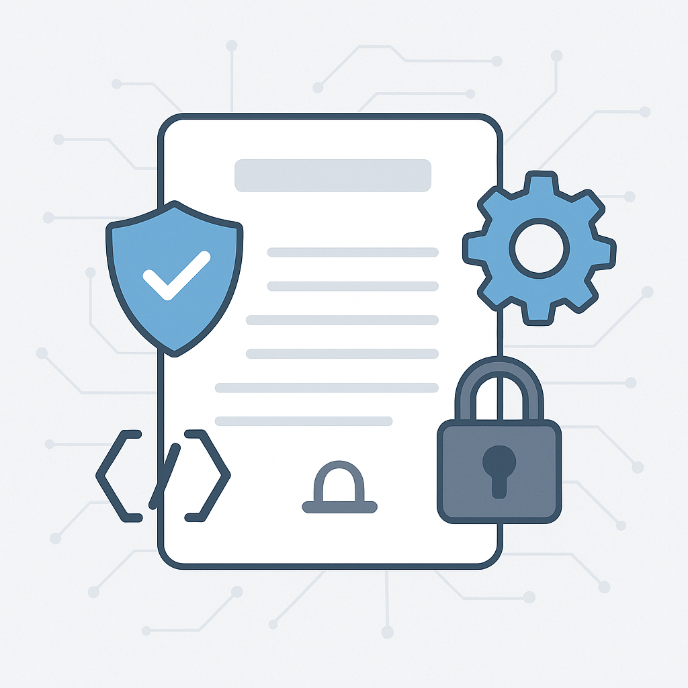
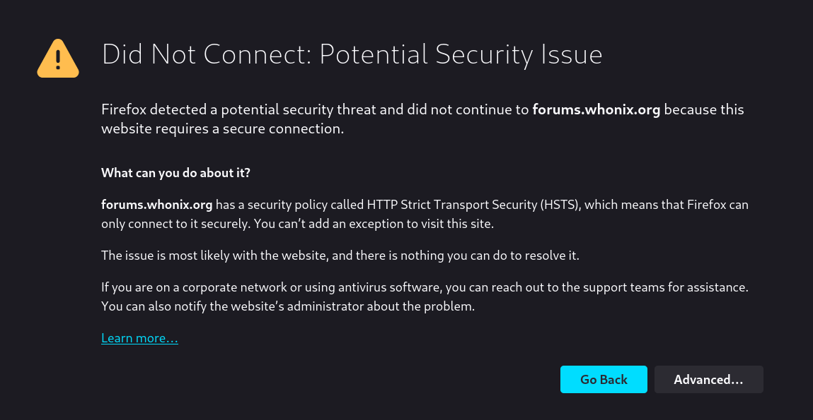

We believe security software like Kicksecure needs to remain Open Source and independent. Would you help sustain and grow the project? Learn more about our 11 year success story and maybe DONATE!
Kicksecure Legal Policies

Technical Details on some of the Technical Measures by Kicksecure to increase privacy and security on kicksecure.com.
See also Privacy
Policy.
These technical details are not part of Privacy Policy.
Overview
Security / Privacy Feature |
Implementation Status |
|---|---|
Valid SSL Certificate |
Yes |
HTTPS Everywhere [1] Inclusion |
Yes [2] |
Yes, A+ rating. [5] |
|
HSTS [6] |
Yes [7] |
Certificate Authority (CA) Pinning |
Obsolete [16] |
DNS Certification Authority Authorization (CAA) Policy [17] |
Yes [18] |
HTTP Public Key Pinning [19] |
Obsolete [20] |
Expect-CT header [21] |
Yes [22] |
certspotter [23] |
Yes [24] |
DNSSEC [25] |
Yes [26] |
Flagged Revisions [27] |
Yes, admins must verify changes before they become the default version. |
Content Security Policy (CSP) |
|
Feature-Policy |
Yes |
Secondary |
|
Onion-Location [35] |
Yes [36] |
onion over TLS |
|
If users have any further suggestions, please edit this entry or discuss possible changes in the Kicksecure forums.
- SPF - SPF Check
- DKIM - DKIM Inspector
- DMARC - DMARC Inspector
- BIMI - BIMI Checker
- DigitalOcean DNS Tool
See also:
Privacy on the Project Website
The Kicksecure website [37] uses popular web
applications (web apps) like MediaWiki and Discourse (forum software).
[38] These are Freedom Software projects developed by
third parties, not the Kicksecure team. As an end user of web apps,
kicksecure.com has no control over changes made by the
respective developers, who do not necessarily (and seldom) prioritize
privacy and security.
The Kicksecure platform is similarly based on many third-party projects. For a simple (approximate) overview of the Kicksecure organizational structure, see: Linux User Experience versus Commercial Operating Systems. In essence, many independent projects provide their software and source code for free, which can be modified or used in their default state. Due to the structure of Freedom Software development and the limited funding available to Kicksecure, it is infeasible to tackle usability, privacy, and security issues posed by these web apps.
Consider the Discourse software, for example:
- Google is used as the default search engine, even though it would be preferable to configure another search engine that respects privacy. Kicksecure developers posted a Feature request: configurable search engine for forum search, but Discourse developers essentially replied, "patches welcome."
- Discourse does not work well with secondary onions.
- Discourse has no feature to easily permit sign-up without an e-mail address.
- Discourse does not function well without JavaScript. Related: Turn off JavaScript in Whonix Forums.
More related to Discourse:
- discourse mailing list mode - non-JavaScript way to interact with the discourse forums
- discourse forums: Isn't using well-known privacy disrespecting technology (JavaScript) against the essential project goal?
Kicksecure is primarily a software project. It uses web applications as a means to an end, not as an end in itself. It is not a web application project.
Based on the preceding information, it is clear that websites can at best only provide privacy by policy, which is equivalent to a promise. For detailed information on the Kicksecure privacy policy, see here. [39]
In contrast, the main project activities undertaken by Kicksecure include research, development, and maintenance of privacy by design software. This is achieved via technological enforcement, remaining free [40] and utilizing Freedom Software, which encourages external contributions, enhancements, and audits.
 Kicksecure welcomes patches or financial contributions to support the development
of desired features.
Kicksecure welcomes patches or financial contributions to support the development
of desired features.
See also Trusting the Kicksecure Website and Website Tests.
View Counters on the Kicksecure Website
View counters in the Kicksecure wiki have been disabled to reduce server load and because they are incompatible with caching.
View counters in the Kicksecure forums were inaccurate and were therefore disabled on 09 April 2021. [41]
Since all web apps running on the Kicksecure server lack access to IP addresses (for details, see Kicksecure Website Privacy Policy and Kicksecure Website IP Addresses and Logging Policy), it is impossible for these web apps to accurately count, for example, how many times a wiki page has been visited or how many times a forum post has been viewed.
Social Share Button
There are no privacy issues caused by any share buttons on the kicksecure.com website. We don't use embedded scripts. The share button is completely self-hosted by this webserver. No scripts from any of the social networks are embedded on this webserver. See also Privacy Policy.
A bit of background on how this generally works on many other websites: Many websites using share buttons for social networks integrate the scripts provided by the social network. For example, to add a Facebook share button, many website administrators use the JavaScript provided by Facebook. These scripts are usually non-freedom software and only stubs. This means that these scripts point to the social network, such as Facebook, and instruct the user's browser to download and execute even more non-freedom JavaScript, HTML, and images. By visiting a website with such a share button, the social network knows that the user visited that website. Due to the script being hosted by a third party, the social network could even perform browser fingerprinting, set browser cookies, and so forth. Clearly, such third-party-hosted share button integrations have many privacy issues.
The advantage is that these buttons are interactive. For example, a user can see how many times something has already been shared, and after pressing the share button, the counter increases or the counter increasing can even be watched live.
Since these advantages are rather playful and minor, the kicksecure.com project decided not to add any third-party-hosted scripts. Unless the user clicks a share button for a specific social network, that social network will receive no information about the user. The source code for the share button on this website is Freedom Software. (Share Button Source Code)
Figure: Share Button
Share button requires JavaScript.
Onion TLS on the Kicksecure Website
Would raise the question: use HSTS or not use HSTS for Onion TLS?
Does Tor Browser support HSTS? Looks like, yes.
- If not using HSTS: If the user's browser is not instructed to enforce TLS, then what's the point?
- If using HSTS: That has potential to break connectivity when there
are issues with the TLS Certificate Authority (CA), such as:
- CA goes out of business.
- CA terminates the services.
- CA starts charging for the service.
- (Legislation changes and) CA starts asking for things which cannot be provided with reasonable effort.
This issue is exacerbated since there is at the time of writing only 1 CA that is offering affordable TLS certificates for onion domains, HARICA. (In future, specifically Let's Encrypt might offer the same and/or others might follow. But that's not the case yet.)
If required at some point for any reason, a downgrade from TLS-onion to non-TLS-onion would look bad.
There are two different systems.
- A) The "normal" internet. The usual top-level
domains,
.com,.org, etc. It is a centralized, permissioned system. The same applies for CAs. - B) The "alternative" internet. For example,
.oniondomains. A decentralized, permissionless system. Anyone can set up an.onionwithout asking a central authority for permission.
Simplified: Connections to onions are already authenticated and end-to-end encrypted. (Details: Notes about End-to-end Security of Onion Services)
Using onions with a TLS certificate from a CA could be viewed as a downgrade. A decentralized, permissionless system is downgraded to a centralized, permissioned system.
Kicksecure Website is currently using Let's Encrypt. Server setup would become more complex by adding another CA, HARICA. The advantages do not outweigh the disadvantages.
Quote Get a TLS certificate for your onion site:
Our Community portal page about onion services give you a list of reasons why a service admin would need a TLS certificate as part of their implementation. Here are some of them:
- Websites with complex setups and that are serving HTTP and HTTPS content
Not the case.
- To help the user verify that the .onion address is indeed the site you are hosting (this would be a manual check done by the user looking at the cert registration information)
Answered below (see 2.).
- Some services work with protocols, frameworks, and other infrastructure that has HTTPS connection as a requirement
In case your web server and your tor process are in different machines
Not the case.
Quote We compiled some topics and arguments, so you can analyze what's the best for your onion site:
1. As anyone can generate an onion address and its 56 random alphanumeric characters, some enterprise onions believe that associating their onion site to an HTTPS certificate might be a solution to announce their service to users. Users would need to click and do a manual verification, and that would show that they're visiting the onion site that they're expecting. Alternatively, websites can provide other ways to verify their onion address using HTTPS, for example, linking their onion site address from an HTTPS-authenticated page, or using Onion-Location.
Already using Onion-Location.
2. Another topic of this discussion is user expectations and modern browsers. While there is extensive criticism regarding HTTPS and the CA trust model, the information security community has taught users to look for HTTPS when visiting a website as a synonym of secure connection and avoid HTTP connections. Tor Developers and UX team worked together to bring a new user experience for Tor Browser users, so when a user visits an onion site using HTTP Tor Browser doesn't display a warning or error message.
Visitors using the onion are expected to use Tor Browser anyhow which as already mentioned in the quote, does not have this issue.
3. Some websites have a complex setup and are serving HTTP and HTTPS content. In that case, just using onion services over HTTP could leak secure cookies. We wrote about Tor Browser security expectations, and how we're working on onion services usability and adoption. There are some alternatives you might want to try to address this problem:
- To avoid using an HTTPS certificate for your onion, the easiest answer is to write all your content so it uses only relative links. Then the content will work smoothly no matter what website name it's being served from.
This is implemented.
- Another option is to use webserver rules to rewrite absolute links on the fly.
This is implemented.
- Or use a reverse proxy in the middle or more specifically EOTK with an HTTPS certificate.
Not needed.
4. Actually HTTPS does give you a little bit more than onion services. For example, in the case where the webserver isn't in the same location as the Tor program, you would need to use an HTTPS certificate to avoid exposing unencrypted traffic to the network in between the two. Remember that there's no requirement for the webserver and the Tor process to be on the same machine.
Not the case for Kicksecure website. It does not require such a complex setup yet.
This might be revisited at a later point need arises and/or when Onion TLS support improved.
Quote https://github.com/alecmuffett/real-world-onion-sites#tls-security
TLS Security
Due to the fundamental protocol differences between
HTTPandHTTPS, it is not wise to consider HTTP-over-Onion to be "as secure as HTTPS";This is a very browser focused viewpoint. That's legitimate because browsers are probably the most popular internet application people are using.
- connection security: Onion is more secure than TLS. Onion's aren't vulnerable to [[SSL#The Broken Certificate Authority System|The Broken Certificate Authority System
]], malicious CA authorities, TLS related attacks. Note: in this context of onion transport security, attacks on onion's anonymity are unrelated. To the knowledge of the author, to contents of a client connection to an onion have never publicly reported being compromised because of broken Tor onion cryptography. Onion encryption versus TLS can also be considered for applications other than browsers.
- application security: The author raises valid concerns.
web browsers do and must treat HTTPS requests in ways that are fundamentally different to HTTP, e.g.:
- with respect to cookie handling, or
- where the trusted connection terminates, or
- how to deal with loading embedded insecure content, or
- whether to permit access to camera and microphone devices (WebRTC)
Valid concern. Mitigated using CSP. Unfortunately CSP is only a server feature. Server instructs browser to fetch only from onion and no mixed content. A browser based security feature enforcing TLS independent from CSP would be stronger.
Since it is difficult to configure many popular web applications to be available on two domains (clearnet and onion) at the same time, it happened in the past on this website that some contents were unavailable over the onion. For example, the project logo was only visible on the clearnet version but not over the onion. The CSP was functional and avoided any content mixing of the onion with contents pointing to clearnet.
...and the necessity of broad adherence to web standards would make it harmful to attempt to optimise just one browser (e.g. Tor Browser) to elevate HTTP-over-Onion to the same levels of trust as HTTPS-over-TCP, let alone HTTPS-over-Onion. Doubtless some browsers will attempt to implement "better-than-default trust and security via HTTP over onions", but this behaviour will not be standard, cannot be relied upon by clients/users, and will therefore be risky.
This depends on the complexity of the implementation. Tor Browser can hopefully use the same code paths. [42]
tl;dr - HTTP-over-Onion should not be considered as secure as HTTPS-over-Onion, and attempting to force it thusly will create a future compatibility mess for the ecosystem of onion-capable browsers.
HSTS Warning
Figure: TLS HSTS failure

This could have many reasons.
- A) Server issue: A server configuration issue or server bug. And/or,
- B) Browser issue: A browser bug. And/or,
- C) Attack: An actual man-in-the-middle (MitM) attack.
If the issue is transient, the only thing that users can effectively do is report it and then ignore it. So far, there was only 1 such report in 12 years.
Meanwhile, if this issue persists for a longer time, the user could use the alternative onion domain.
If this is an actual MitM attack, then there is most likely nothing the website can do about it, since it would not be the cause of the issue.
See Also
Footnotes
- https://www.eff.org/https-everywhere
- https://gitlab.torproject.org/legacy/trac/-/issues/9143
- https://www.ssllabs.com/
- https://www.ssllabs.com/ssltest/index.html
- https://www.ssllabs.com/ssltest/analyze.html?d=kicksecure.com
- https://en.wikipedia.org/wiki/HTTP_Strict_Transport_Security
- curl -i https://kicksecure.com
- https://blog.chromium.org/2011/06/new-chromium-security-features-june.html
- https://blog.stalkr.net/2011/08/hsts-preloading-public-key-pinning-and.html
- https://www.chromium.org/hsts/
- https://blog.mozilla.org/security/2012/11/01/preloading-hsts/
- https://bugzilla.mozilla.org/show_bug.cgi?id=861960
- https://web.archive.org/web/20201214130859/https://github.com/Whonix/Whonix/issues/34
- https://src.chromium.org/viewvc/chrome?revision=209444&view=revision
- https://hstspreload.org/?domain=kicksecure.com
- https://forums.whonix.org/t/certificate-authority-ca-pinning-for-whonix-org/19331
- https://blog.qualys.com/ssllabs/2017/03/13/caa-mandated-by-cabrowser-forum
- https://forums.whonix.org/t/dns-certification-authority-authorization-caa-policy-dnssec-for-Kicksecure-org-ssllabs-com-test-results/5487
- https://developer.mozilla.org/en-US/docs/Web/Security/Certificate_Transparency
- https://forums.whonix.org/t/should-we-enable-http-public-key-pinning-hpkp-for-whonix-org/19313
- https://scotthelme.co.uk/a-new-security-header-expect-ct/
- * https://forums.whonix.org/t/dns-certification-authority-authorization-caa-policy-dnssec-for-Kicksecure-org-ssllabs-com-test-results/5487/2 * https://forums.whonix.org/t/expect-ct-security-header-for-whonix-org/10286
- https://github.com/SSLMate/certspotter
- https://forums.whonix.org/t/dns-certification-authority-authorization-caa-policy-dnssec-for-Kicksecure-org-ssllabs-com-test-results/5487/2
- https://en.wikipedia.org/wiki/Domain_Name_System_Security_Extensions
- https://forums.whonix.org/t/dns-certification-authority-authorization-caa-policy-dnssec-for-Kicksecure-org-ssllabs-com-test-results/5487
- https://www.mediawiki.org/wiki/Extension:FlaggedRevs
- https://securityheaders.io/?followRedirects=on&hide=on&q=kicksecure.com
- https://forums.whonix.org/t/use-a-content-security-policy/19327
- https://forums.whonix.org/t/whonix-website-security-rating-b-mozilla-observatory-content-security-policy-csp/3874
- https://forums.whonix.org/t/content-security-policy-now-deployed-on-Kicksecure-websites/5494
- Optional Tor onion service (
.oniondomain); alternative end-to-end encrypted/authenticated connection; in this use case, not for location privacy; backup in case DNS is not functional. - w5j6stm77zs6652pgsij4awcjeel3eco7kvipheu6mtr623eyyehj4yd.onion
- See also Forcing .onion on Kicksecure.org.
- https://community.torproject.org/onion-services/advanced/onion-location/
- https://forums.whonix.org/t/onion-forum-site-redirects-to-clearnet/197/15
- Clearnet address: https://www.kicksecure.com onion address: w5j6stm77zs6652pgsij4awcjeel3eco7kvipheu6mtr623eyyehj4yd.onion
- This is common practice. For example, the Free Software Foundation (FSF) also uses Discourse.
- This includes any type of information that is collected and recorded and how it may be used. The processing of any personal information is subject to the General Data Protection Regulation (GDPR).
- Free in terms of price while also respecting user and developer freedoms.
- * https://meta.discourse.org/t/custom-css-for-removing-view-count-bar/74581/6 * https://meta.discourse.org/t/custom-css-for-removing-view-count-bar/74581/9 * https://meta.discourse.org/t/disable-click-counts/146622/2
- Pseudo code, hopefully, needs further research. * Most browsers:
insecure protocols = http secure protocols = https* Tor Browser:
insecure protocols = http secure protocols = https, onion